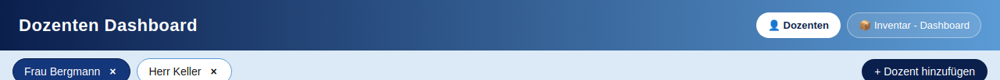
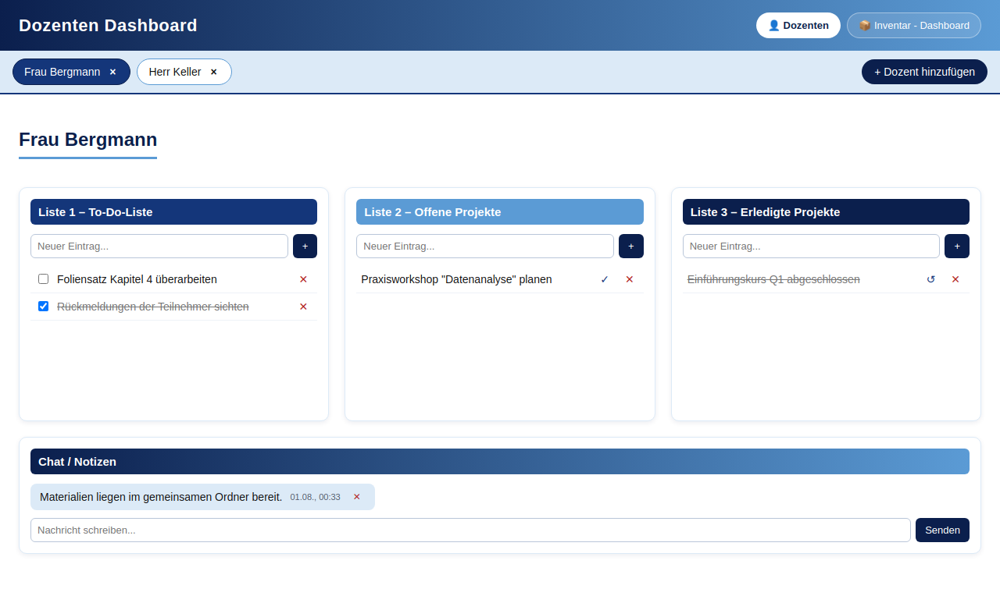
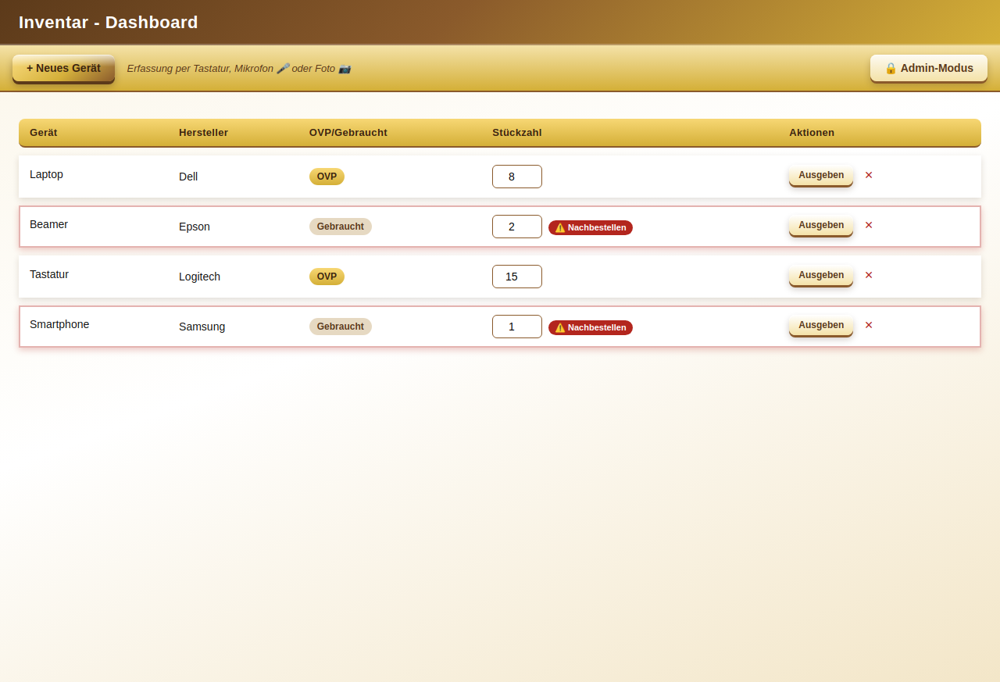
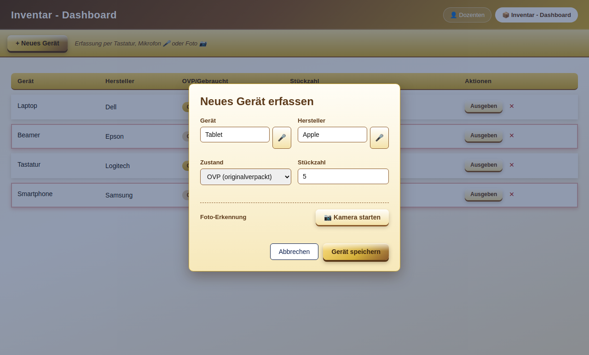
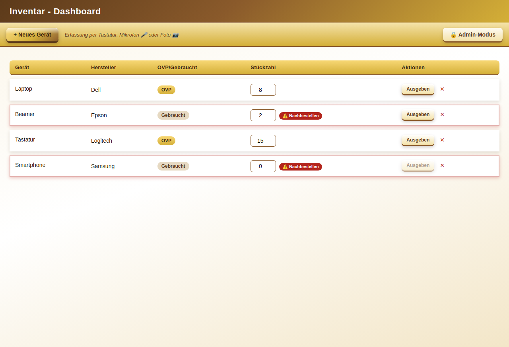
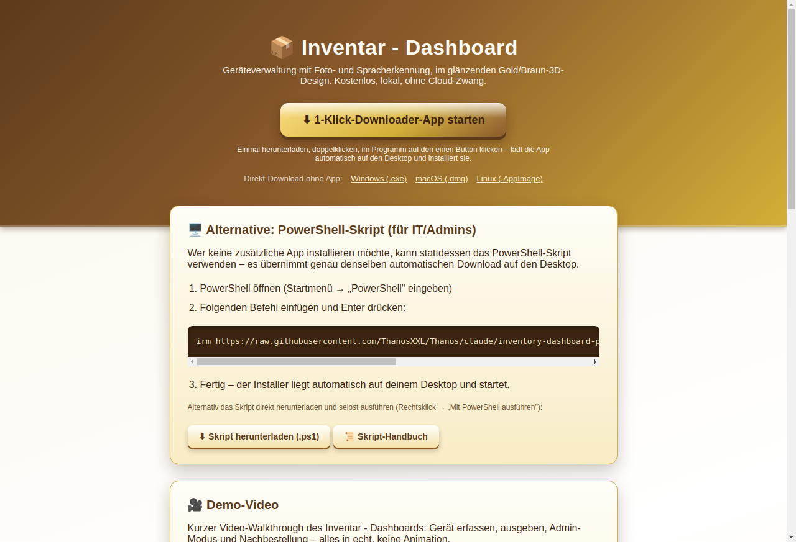

Dozenten Dashboard & Inventar - Dashboard – Version 1.0
Das Dozenten Dashboard ist eine Desktop-App für bis zu vier Dozenten. Jeder Dozent hat eine To-Do-Liste, offene und erledigte Projekte sowie einen Chat/Notiz-Bereich. Über den Umschalter oben rechts im Header wechselst du in das Inventar - Dashboard – eine Geräteliste mit Foto- und Spracherkennung im eigenen Gold/Braun-Design. Alle Daten werden ausschließlich lokal auf deinem Rechner gespeichert.

Pro Dozent gibt es drei Listen sowie einen Chat-Bereich:
| Liste | Zweck |
|---|---|
| Liste 1 – To-Do-Liste | Aufgaben mit Checkbox zum Abhaken |
| Liste 2 – Offene Projekte | Laufende Projekte, per ✓ nach „Erledigt" verschiebbar |
| Liste 3 – Erledigte Projekte | Abgeschlossene Projekte, per ↺ zurückholbar |

Über „+ Dozent hinzufügen" oben rechts legst du einen neuen Dozenten an (maximal 4). Über das „×" auf einem Tab entfernst du einen Dozenten inklusive aller zugehörigen Listen – das erfordert eine Bestätigung.
Die Geräteliste zeigt Gerät, Hersteller, Zustand (OVP/Gebraucht) und Stückzahl in der oberen Leiste. Neue Geräte erfasst du über „+ Neues Gerät".

Im Erfassungs-Dialog stehen drei Eingabewege zur Wahl, auch kombinierbar:

Nach der Fotoaufnahme zeigt die App einen Vorschlag: „Erkannt: '…' – ist das richtig?" Bei „Ja, übernehmen" wird der Gerätename automatisch eingesetzt und der Fokus springt direkt in das Stückzahl-Feld, damit du nur noch die Menge ergänzen musst. Bei „Nein, korrigieren" trägst du den Namen einfach selbst ein.
Über den Button „Ausgeben" in einer Zeile öffnest du den Ausgabe-Dialog: Menge und optional den Namen des Empfängers eintragen. Die Stückzahl wird automatisch reduziert und die Ausgabe protokolliert. Fällt der Bestand auf 3 Stück oder weniger, erscheint automatisch eine Erinnerung zur Nachbestellung – sowohl als Hinweis-Badge in der Tabelle als auch als Meldung nach der Ausgabe.

Die Stückzahl lässt sich außerdem jederzeit direkt in der Tabelle über das Zahlenfeld anpassen.
Admins können zusätzlich einen PIN-geschützten „🔒 Admin-Modus" freischalten – mit allen Download-Versionen und einer Nachbestellungen-Verwaltung ganz oben im Inventar - Dashboard. Details dazu im eigenen Inventar-Handbuch.
Fertige Installationsdateien für Windows, macOS und Linux gibt es auf der Download-Seite – entweder als direkter Download, als 1-Klick-Downloader-App oder, für Windows, als vollautomatisches PowerShell-Skript, das die App direkt auf den Desktop lädt.

Einfach auf „Nein, korrigieren" klicken und den Gerätenamen manuell eintragen.
Ja – alle Grundfunktionen (Listen, Inventar, Tastatureingabe) funktionieren offline. Nur Mikrofon-Diktat und Foto-Erkennung benötigen eine Internetverbindung.
In einer lokalen Datei im Benutzerverzeichnis der App, nie auf einem externen Server.